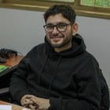

Tesis de Pregrado |
|  | Sergio Carrasco Programa: Ingeniería Civil Matemática, Universidad de Concepción, Chile. Título de la Tesis: Metodos de Elementos Finitos Mixtos en Espacios de Banach para las Ecuaciones de Brinkman-Forchheimer Convectivas Acopladas con Doble Difusion. Profesor guía: Gabriel N. Gatica. Profesor co-guía: Sergio Caucao. Periodo de la tesis: Marzo 2023 - Agosto 2023. |